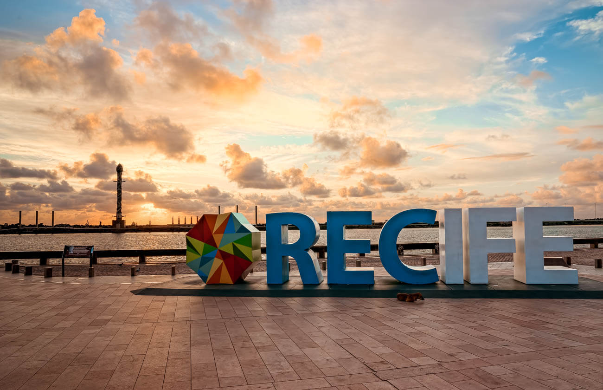

A cidade
Porta de entrada do Nordeste brasileiro, Recife além de belas paisagens - com pontes e rios cortando toda a cidade, atrai milhares de turistas todos os anos. Rica em manifestações culturais e folclóricas, suas raízes estão sempre traduzidas em sua essência artística e preservadas como importante patrimônio.
Em grandes eventos como seu famoso Carnaval, o som do frevo arrasta multidões embalando o desfile de blocos e troças, que se misturam a outros ritmos como maracatu, caboclinho, forró, ciranda, coco de roda e até mesmo música eletrônica. O grande destaque é o Galo da Madrugada - reconhecido como o maior bloco carnavalesco do mundo pelo Guiness Book - que entoa pelas ruas do Bairro de São José, há 36 anos: “Ei pessoal, vem moçada! Carnaval começa no Galo da Madrugada”.
O São João é outro evento com inúmeras atrações nos principais polos dos festejos juninos: Sítio da Trindade, Parque Dona Lindu, Pátio de São Pedro, Rua da Moeda e Praça do Arsenal. Arraste o pé ao som da zabumba e sanfona e vivencie de perto esta tradição.
Mas não só de festa vive Recife. Com mais de 1,5 milhão de habitantes, a região metropolitana da capital pernambucana tem um aglomerado econômico de grande densidade e liderança regional, abrigando as principais indústrias do Estado e consolidando-se como um moderno polo de serviços. Recife é considerado o primeiro polo gastronômico do Nordeste, o segundo polo médico do Brasil, além de abrigar o maior parque tecnológico do País, conhecido como Porto Digital.
Recife é tudo isso. Bela por natureza. E cheia de personalidade. Texto retirado do site da Prefeitura de Recife.
A história do Marco Zero no Recife Antigo
O Marco Zero no Recife Antigo é o lugar de referência onde a cidade nasceu e todas as medidas oficiais de distâncias rodoviárias usam como ponto de partida. Seu nome é, na verdade, Praça Rio Branco e fica ao lado do Porto de Pernambuco.

Pode-se dizer que ele se situa no centro histórico da cidade, que é mais conhecido como Recife Antigo por ser a parte onde se iniciou o povoamento da capital pernambucana.
A popularização do nome Marco Zero aconteceu desde 1938, devido à instalação do símbolo geográfico na parte central da praça. Ele foi uma doação do Automóvel Clube de Pernambuco.
Além disso, há nela uma estátua de bronze de 2,80 metros, de autoria do escultor francês Félix Charpentier.